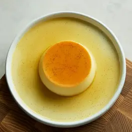

Homemade Vanilla Pudding

Sweet and delicious, learn how to make a vanilla pudding
Vanilla pudding is a creamy, sweet milk-based dessert that is typically thickened with a combination of cornstarch or flour and eggs, and then flavored with vanilla. It can be made from scratch using milk, sugar, and vanilla extract, or from a boxed mix. Vanilla pudding is often enjoyed on its own, as a base for other desserts like banana pudding or trifle, or topped with fresh fruit or whipped cream.
Ingredients
- 2 cups milk
- ½ cup white sugar
- 3 tablespoons cornstarch
- ¼ teaspoon salt
- 1 teaspoon vanilla extract
- 1 tablespoon butter
Steps
- Heat milk in a medium saucepan over medium heat until bubbles form at the edges.
- Mix sugar, cornstarch, and salt together in a small bowl.
- Add sugar, cornstarch, and salt mixture to hot milk, a little at a time, stirring until thick enough to coat the back of the spoon.
- Remove saucepan from heat, and stir in vanilla and butter.
- Spoon pudding evenly into 5 serving dishes. For best results, chill pudding in the refrigerator before serving.
Home